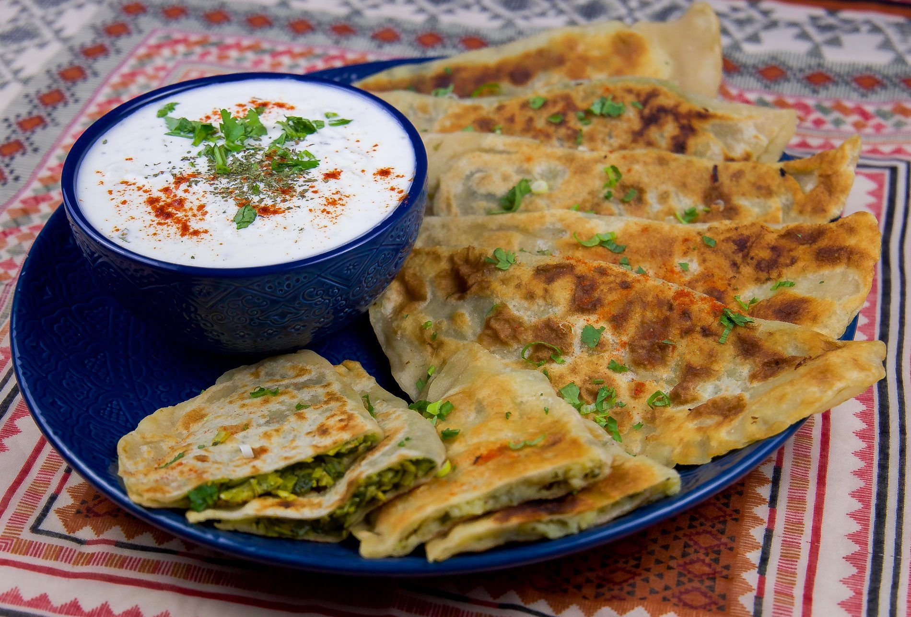

Afghan Boloni

Ingredients dough
- 3 cups flour, plus extra for rolling
- 1 teaspoon salt
- 3 tablespoons olive oil, divided
- 1 tablespoon olive oil
- 3/4 cup or more water
Ingredients filling
- 1 pound fresh spinach leaves
- 1 1/2 cups roughly chopped cilantro (leaves and stems)
- 1 cup roughly chopped green onions or leeks
- 1 tablespoon olive oil
- Salt
- Freshly ground black pepper
Preparation
- Blanch the spinach. I like to do this by placing the spinach in a large colander in the sink, and pouring boiling water over the top until the leaves are just wilted. Drain well, pressing as much extra water from the spinach as you can.
- Using a food processor (you can do this with a knife, too, but a food processor makes quick work of it. If you do use a knife, add the olive oil in at the end, along with the salt and pepper), pulse the cilantro, green onions, jalapeño, and 1 tablespoon olive oil a few times until the veggies are finely minced. Add the spinach to the food processor, a couple of handfuls at a time, and pulse until everything is minced and well combined.
- Mix in salt and freshly ground pepper to taste. Don’t be shy here - spinach can be quite bland without enough seasoning. Add a few good pinches, give it a taste, and add more if needed.
Putting the boloni together
- Divide the dough into 6 equal pieces.
- On a floured work surface, roll each piece into a thin round about 8 inches across. Keep covered under a slightly damp towel until ready to stuff. If you stack your dough rounds while working, be sure they are well dusted with flour, or they’ll tend to stick together.
- Spread a generous 1/3 cup of filling on half of each round, leaving a border along the edge for sealing. Fold the dough over, making a half-circle shape, and gently press the surface to remove any big air pockets. Press the edges together to seal. Set aside under a slightly damp towel until ready to fry.
- Heat a 10-inch skillet or a griddle over medium. You’ll know it’s hot enough when a drop of water dances and sizzles across the surface. Generously brush one side of one bolani with some of the reserved olive oil. Place oil side down on the hot skillet, and fry until golden brown. Brush the second side with oil, flip, and cook until golden brown and delicious. Set aside, lightly covered with foil or a towel to keep warm, and repeat with the remaining bolani.